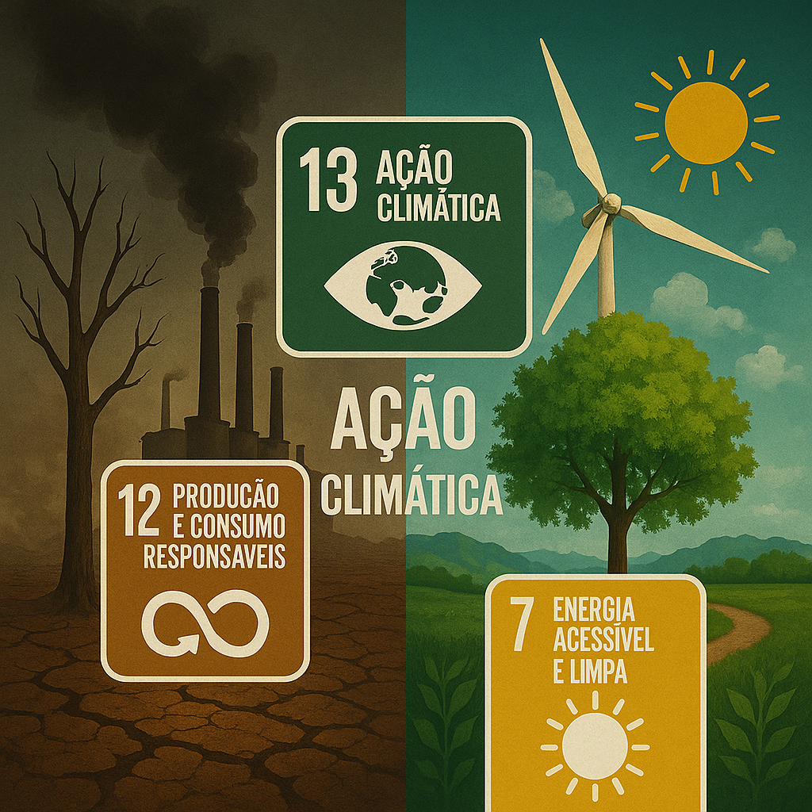

Transforme o seu consumo. Aprenda como adotar práticas sustentáveis.
O que é Sustentabilidade?
A sustentabilidade é o princípio de garantir que as gerações futuras tenham os recursos necessários para viver.
Isso envolve práticas responsáveis na gestão de recursos naturais, desenvolvimento de produtos sustentáveis e minimização do desperdício.
A Importância da Economia Circular
A economia circular é um modelo de produção e consumo que visa maximizar a utilização de recursos, minimizar o desperdício e incentivar o reaproveitamento de materiais.
Objetivos de Desenvolvimento Sustentável (ODS)
Os Objetivos de Desenvolvimento Sustentável (ODS) são uma iniciativa das Nações Unidas composta por 17 metas globais que visam promover um futuro mais justo, equilibrado e sustentável para todos. A GreenLoop está alinhada com três desses objetivos, considerados fundamentais para promover a economia circular e reduzir o impacto ambiental:
ODS 12: Produção e Consumo Responsáveis - Promove o uso eficiente dos recursos naturais, incentiva a reutilização de materiais e combate o desperdício. A GreenLoop permite acompanhar compras, promover devoluções de embalagens e impulsionar práticas circulares.
ODS 13: Ação Climática - Enfrentar as alterações climáticas exige reduzir emissões de carbono e adotar soluções sustentáveis. Ao fornecer dados ambientais (como emissões de CO₂ por produto), a GreenLoop ajuda empresas e utilizadores a tomarem decisões conscientes.
ODS 7: Energia Acessível e Limpa - Incentiva o acesso a fontes de energia renovável e mais limpas. Embora este ODS não seja abordado diretamente, promovemos práticas que reduzem o consumo energético e incentivam escolhas que contribuem para um futuro com menor dependência de energia poluente.

Como Adotar Hábitos Mais Sustentáveis
Cada pessoa pode contribuir para um futuro mais sustentável através de pequenas ações diárias que, somadas, fazem uma grande diferença:
🌿 Leva sacos reutilizáveis para as compras e evita plásticos descartáveis.
💧 Reduz o consumo de água — fecha a torneira enquanto escovas os dentes.
🔌 Poupa energia — desliga os aparelhos quando não estão a ser usados.
🚲 Opta por transportes públicos, bicicleta ou caminhadas sempre que possível.
♻️ Dá uma segunda vida a objetos — reutiliza, repara ou doa antes de deitar fora.
Mensagem às Empresas Setor Produtivo
As indústrias têm um papel fundamental na construção de uma economia circular. Aqui estão algumas práticas recomendadas:
🏭 Reduzir o desperdício de matéria-prima através da otimização dos processos de fabrico.
🔄 Implementar sistemas de recolha e reutilização de embalagens ou produtos usados.
🌱 Escolher materiais recicláveis ou biodegradáveis sempre que possível.
⚙️ Investir em tecnologias limpas e energias renováveis.
📦 Garantir a rastreabilidade e sustentabilidade em toda a cadeia de abastecimento.
Empresas responsáveis não apenas protegem o ambiente, mas também ganham a confiança dos consumidores.
Mensagem Importante
"O futuro é verde! A sustentabilidade não é apenas uma tendência, é a única maneira de garantir um planeta habitável para as nossas próximas gerações."